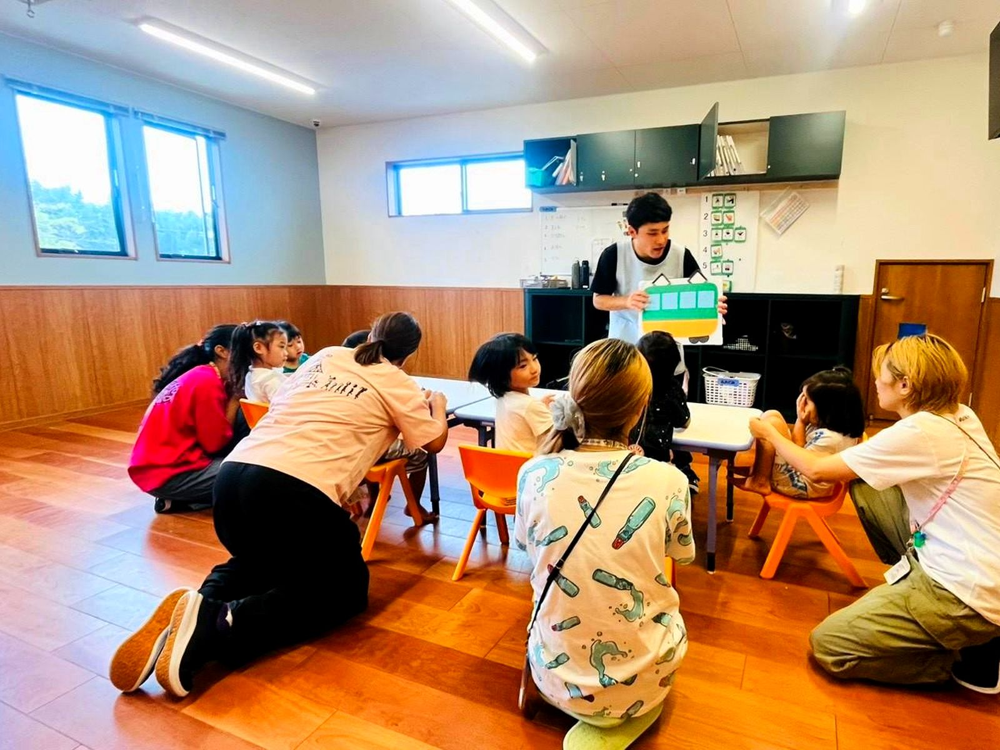

お住まいの市町村の窓口に申請します。相談支援事業所での計画作成や、医師の意見書などが必要になります。手続きの順番はこちらでご説明し、必要な書類のご準備もお手伝いします。
ご利用の流れを見る →できます。お子さんといっしょに来ていただいて、実際の時間に体験していただけます。お子さんが来られなくても、保護者の方だけの見学でかまいません。
見学・体験を申し込む →かみのてKIDS（可児市土田）とかみのてSMILE（可児市今渡）は、支援の考え方は同じです。定員はかみのてKIDSが30名、かみのてSMILEが10名です。お住まいの場所や送迎の都合、空き状況でお決めいただくことが多いです。
2つの事業所を見る →かみのてKIDS・かみのてSMILEとも 9:00〜18:00（月〜金）です。学校のある日は放課後から、長期休みは朝からご利用いただけます。
一日の流れを見る →費用の大部分は自治体の給付でまかなわれ、ご負担は原則1割です。世帯の所得に応じて月ごとの上限額が決まっているため、それを超えるお支払いは発生しません。
ご利用料金について見る →健康・生活、運動・感覚、認知・行動、言語・コミュニケーション、人間関係・社会性の5つの領域を、あそびと毎日のくらしの中で育てていきます。机に向かう訓練だけの時間ではありません。
支援の内容を見る →支援プログラム、自己評価結果、保護者の方によるご評価を公表しています。
情報公表のページを見る →英語・タガログ語・ビサヤ語・ポルトガル語で対応できるスタッフがいます（日本語とあわせて5つの言語）。受給者証の申請や個別支援計画のご説明など、大事なところはこれらの言語でお伝えします。
多言語での支援を見る →※ このページの答えのうち、利用時間・定員・所在地・対応言語・ご利用料金の考え方は現行サイトからの引用です。それ以外は一般的な事業所の例で書いた仮のもので、取材のときにうかがって差し替えます。